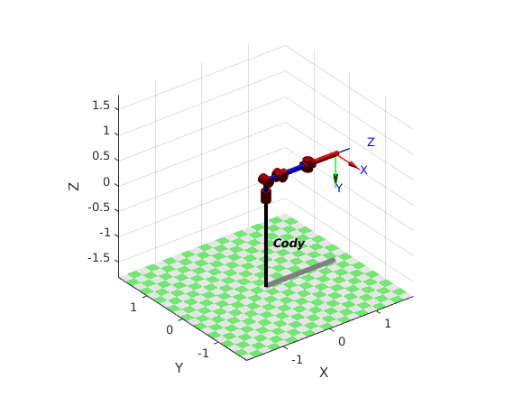
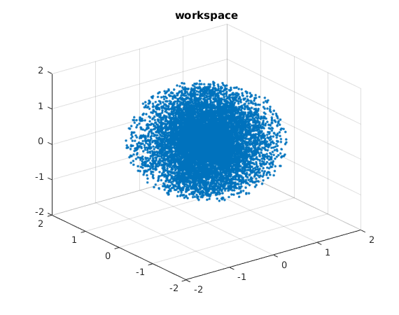

Contents
% This file is part of The Robotics Toolbox for Matlab (RTB). % % RTB is free software: you can redistribute it and/or modify % it under the terms of the GNU Lesser General Public License as published by % the Free Software Foundation, either version 3 of the License, or % (at your option) any later version. % % RTB is distributed in the hope that it will be useful, % but WITHOUT ANY WARRANTY; without even the implied warranty of % MERCHANTABILITY or FITNESS FOR A PARTICULAR PURPOSE. See the % GNU Lesser General Public License for more details. % % You should have received a copy of the GNU Leser General Public License % along with RTB. If not, see <http://www.gnu.org/licenses/>. clear L %%%% these are the DH parameters that we came up with %%%% in class to describe the Forward Kinematics l = 0.3; L(1) = Link([ 0 l 0 -pi/2 0 0], 'standard'); L(2) = Link([ 0 0 l 0 0 0], 'standard'); L(3) = Link([ 0 0 0 pi/2 0 pi/2], 'standard'); L(4) = Link([ 0 l+l 0 pi/2 0 -pi/2], 'standard'); L(5) = Link([ 0 0 0 -pi/2 0 0], 'standard'); L(6) = Link([ 0 l+l 0 0 0 0], 'standard');
defining the robot now
cody = SerialLink(L, 'name', 'Cody', ... 'manufacturer', 'Meka', 'comment', 'params from Meka'); %%this allows use to line up the first or base frame in a way we want, it %%is a static transformation that gets added to all of our FK calculations cody.base = [1 0 0 0; 0 1 0 0; 0 0 1 0; 0 0 0 1]; % some useful poses qz = [0 0 0 0 0 0]; % zero angles, L shaped pose clear L figure(1); cody.plot(qz); final_origin = [0; 0; 0; 1]; n = 10000; points = []; for i=1:n qz = rand([1,6])*2*pi; T = cody.fkine(qz); base_point = T*final_origin; points = [points base_point]; end figure(2); scatter3(points(1,:), points(2,:), points(3,:),'.'); title('workspace'); 